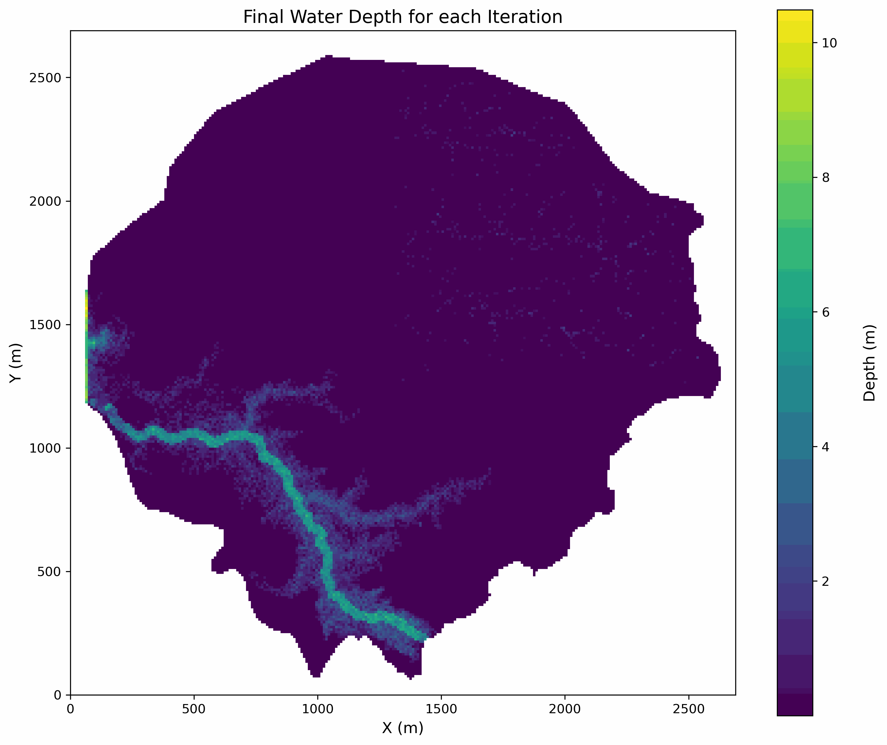
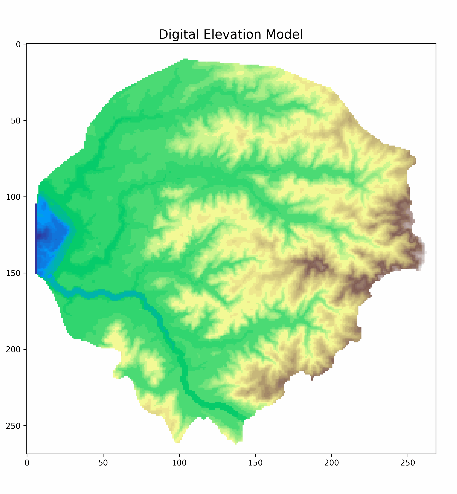
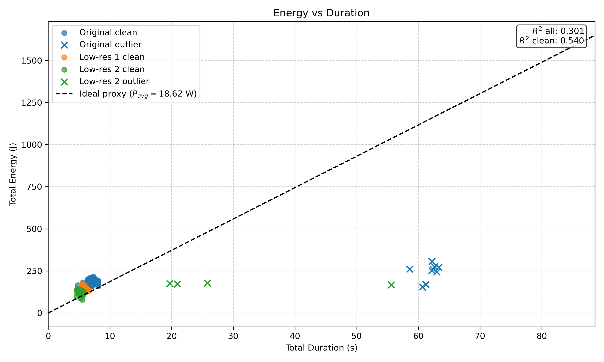
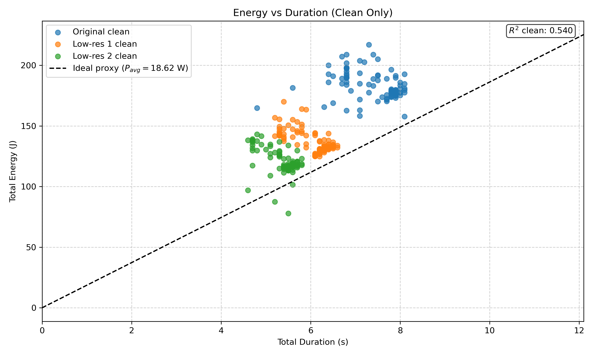
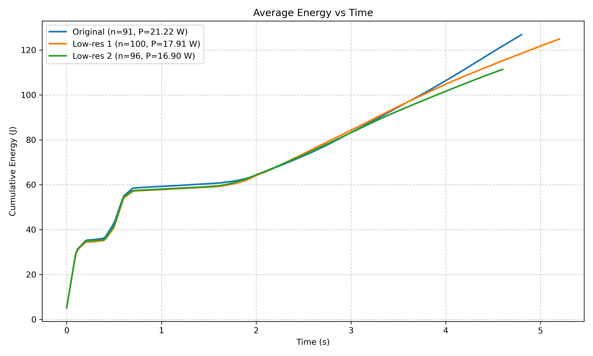
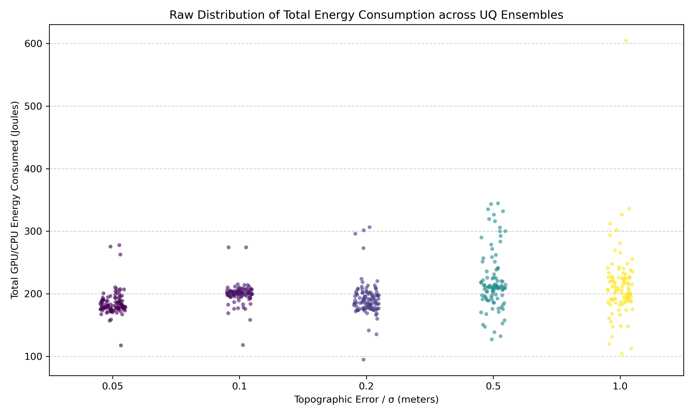
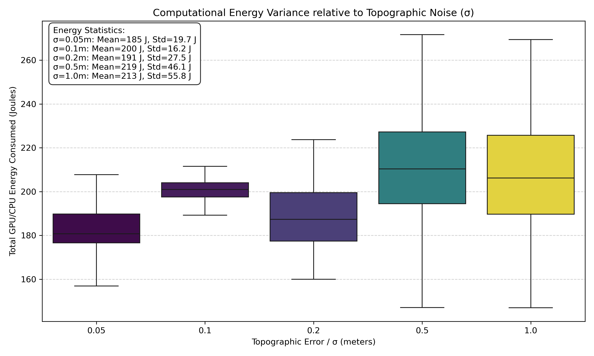

Chair of Methods for Model-based Development in Computational Engineering
June 1, 2026
Figure 1: Original vs. Noisy DEM
“Overlooking DEM uncertainty may lead to a bias in risk management decisions” [1]
| \(\sigma_{input}\) | Mean (m) | Std. Dev (m) | CV (%) |
|---|---|---|---|
| 0.05 | 0.739 | \(\pm 0.050\) | 6.78% |
| 0.1 | 0.756 | \(\pm 0.110\) | 14.50% |
| 0.2 | 0.774 | \(\pm 0.206\) | 26.61% |
| 0.5 | 0.880 | \(\pm 0.446\) | 50.71% |
| 1.0 | 1.101 | \(\pm 0.817\) | 74.21% |

Figure 3: Water depth uncertainty propagation.
Original DEM
→
Noise Injection
→
Alumet + Synxflow
→
Ensemble Analysis
Figure 4: Computational Pipeline Flowchart
\(E = A + P \cdot t\)

Figure 5: Comparison of Original and Downsampled DEM Resolutions

Figure 6: Total energy consumption vs. execution duration for all iterations

Figure 7: Total energy consumption vs. execution duration for all clean iterations

Figure 8: Average Cumulative Energy-Time Plot

Figure 9: Raw distribution of total energy consumption for each topographic noise level

Figure 10: Statistical distribution of total energy consumption for each topographic noise level